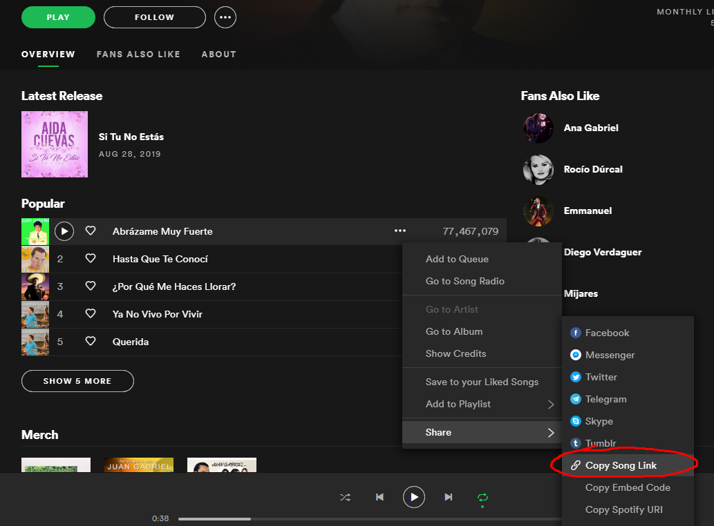

Cuestionario
¿Por qué es una buena práctica separar el modelo del controlador?
Es buena practica ya que el modelo puede o debe ser utilizado por varios controladores en el sitio web.
¿Qué es SQL injection y cómo se puede prevenir?
Es similar al ataque XSS ya que implica que un usuario ingresa comandos en un input para poder asi hacer que el sistema los ejecute. En este caso, serian comandos de tipo SQL. Es importante prevenir estos ataques ya que podrian borrar y modificar nuestra base de datos. Para prevenirlo, se pueden utilizar los metodos de preparacion que revisa que el input no sea un comando SQL similarmente al comando htmlcharacters en el caso de XSS. En este laboratorio se utilizo el metodo anterior.
